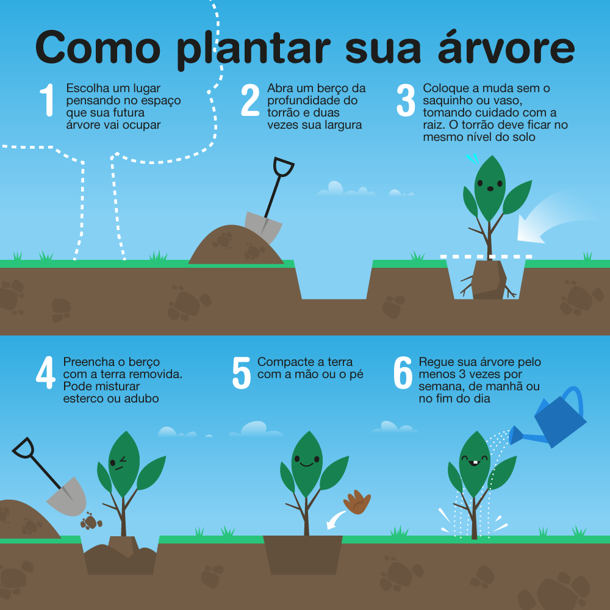

Economia Agrícola e Sustentabilidade
O plantio de árvores é uma prática fundamental, para contribuir para a biodiversidade.
Neste guia, vamos ensinar o passo a passo correto para plantar uma árvore.
Como Plantar uma Árvore: Passo a Passo
ATENÇÃO
Venha retirar sua muda de árvore em frente a minha residência!
É TOTALMENTE GRATUITO